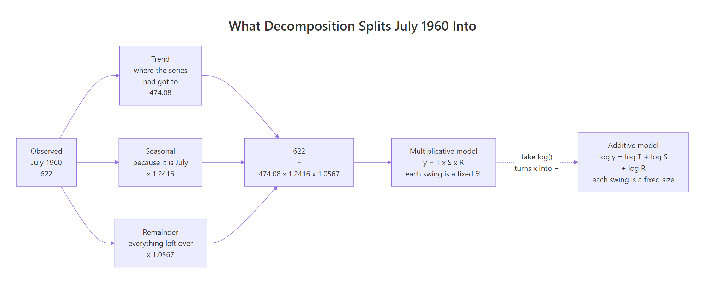
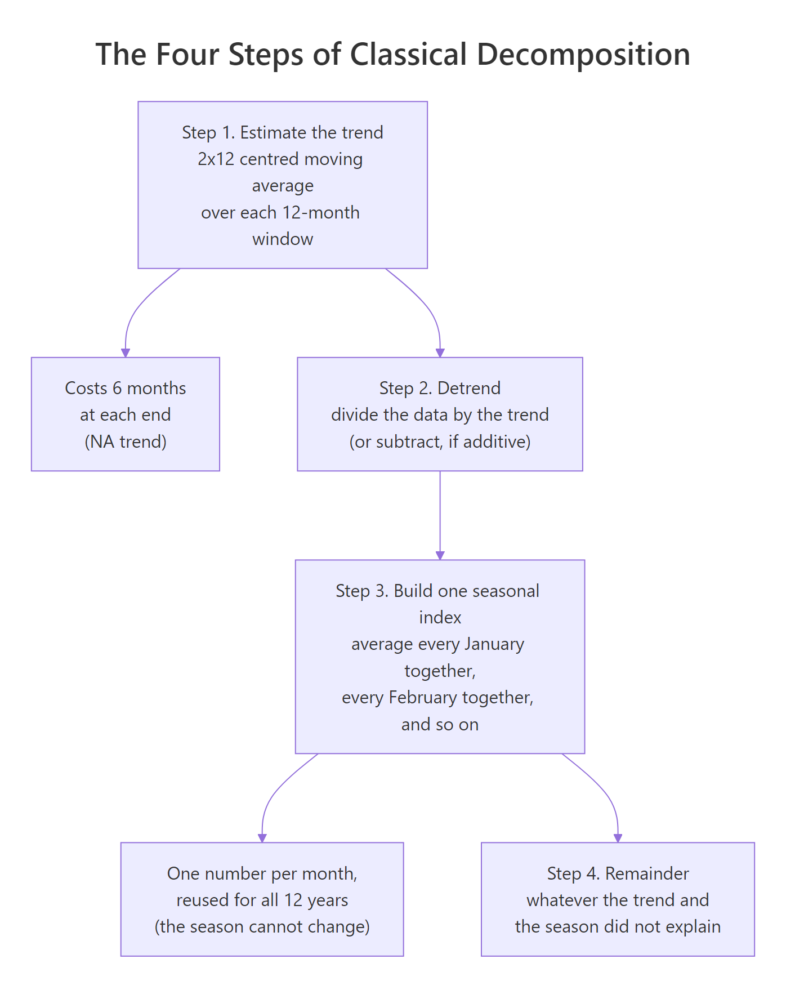
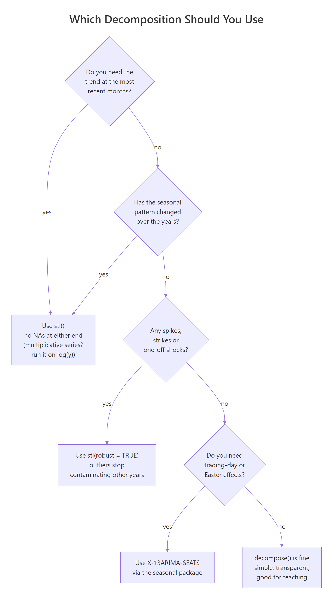

Decomposition splits a time series into three parts: a trend (where the series has got to), a seasonal component (the part that repeats every year) and a remainder (everything neither of those explains). R gives you two tools for the job. decompose() is the classical method, simple enough to rebuild by hand in four lines. stl() is the modern one, and it can do things the classical method structurally cannot: keep the most recent months, let the seasonal pattern change over the years, and shrug off a one-off shock. This post runs both on the same real series and shows you exactly where they part company.
Was July 1960 a good month for the airlines?
The series we will use for the whole post is AirPassengers. It ships with R, so you already have it, and it is the same series the rest of this section uses. It holds 144 numbers: the monthly total of international airline passengers, in thousands, from January 1949 to December 1960.
Its biggest number is 622, in July 1960. That is the busiest month in the entire file. So: was it a good month?
The honest answer is that 622 on its own tells you nothing. Two things guarantee a big number in July 1960 before any real news gets a chance to show up. First, 1960 sits at the end of a decade in which air travel roughly quadrupled, so any month in 1960 beats any month in 1949. Second, July is peak holiday season, so July beats its own neighbours every single year. A record in the peak month of the final year is exactly what you would expect from a growing, seasonal series where nothing interesting happened at all.
Decomposition is what separates those two boring explanations from the interesting part. It takes the 622 and splits it into the part that is trend, the part that is "it is July", and the part that is neither. That last part is the only bit that carries news.
Here is the whole idea, on the real number, before any theory.
Read the three numbers in the middle and the question is answered.
The trend was 474.08. That is where the airline business had got to by mid-1960, with the seasonal ups and downs averaged away. It is not a number that appears anywhere in the data file; it is the underlying level.
The seasonal part was 1.2416. July runs about 24% above the trend, every year, because July is July. Nothing about 1960 is special here.
The remainder was 1.0567. This is the only part carrying actual news, and it says July 1960 came in about 5.7% higher than the trend and the calendar together predicted. So yes, it was a genuinely good month, but by roughly 5.7%, not by "biggest number in twelve years".
The last line is worth pausing on. prod() multiplies the three parts together and gets back exactly 622, the number we started with. The decomposition is not an approximation or a summary that throws information away. It is a re-description: the same number, rewritten as a product of three interpretable pieces. Nothing is lost, and you can always put it back together.
stl() did this for all 144 months at once, not just July 1960. Plot the fitted object and you get all four series stacked: the data on top, then the three parts it was split into.
You get four panels. The top one (data) is the familiar AirPassengers shape. Below it, seasonal is a wave that repeats identically every twelve months. trend is the smooth climb underneath it all, with none of the wobble. remainder is what is left, and it is small and patternless, which is what tells you the first two panels have done their job. The grey bars on the right show each panel on a common scale, so a tall bar means that component is a small part of the story. The seasonal bar is short and the remainder bar is tall, which is the picture's way of saying the season explains a lot and the leftovers explain little.
Note: The panels are on the log scale, because we passed
log(AirPassengers)rather thanAirPassengers. That is why the seasonal wave has a constant height here even though the swings in the raw data visibly grow. The next section explains why we did that, and what it would have looked like otherwise.
What is the decomposition model?
We just used three components without saying what rule combines them. There are two candidate rules, and choosing between them is the first real decision in any decomposition.
The additive model says the parts add up:
$$y_t = T_t + S_t + R_t$$
where \(y_t\) is the observed value at time \(t\) (for us, passengers in month \(t\)), \(T_t\) is the trend at that time, \(S_t\) is the seasonal effect for that month, and \(R_t\) is the remainder. Under this model, \(S_t\) is measured in passengers: it claims July adds a fixed number of passengers over the trend, the same number in 1949 as in 1960.
The multiplicative model says the parts multiply:
$$y_t = T_t \times S_t \times R_t$$
Here \(S_t\) is a ratio with no units: \(S_t = 1.25\) means "July runs 25% above trend". This model claims July adds a fixed percentage, so the size of the July bump grows in step with the business.
Which one is right is not a matter of taste. It is a claim about the data, and the data can settle it. Ask each model what it thinks July is worth.
decompose() is R's classical decomposition, which the next section pulls apart properly. For now we are only borrowing one number from it. $figure is its seasonal index: twelve numbers, one per calendar month, in January-to-December order, so figure[7] is July.
The additive model says July is worth +63.83 thousand passengers above trend. Every July. The multiplicative model says July is worth 1.2266, a 22.66% lift above trend. Every July.
Both are claims about all twelve Julys in the file. So let us go and look at all twelve Julys.
seq(7, 144, by = 12) builds the positions of every July: month 7 is July 1949, month 19 is July 1950, and so on up to month 139, which is July 1960. The first line subtracts the trend from the data at each of those positions (the additive question: how many passengers above trend?). The second divides instead (the multiplicative question: what ratio of the trend?). Ignore the trailing NA for a moment; it is not a mistake and it becomes the point of this post two sections from now.
Now compare each row against the claim its model made.
The additive model claimed +63.83, every year. Reality: +21.2 in 1949, rising steadily to +117.3 in 1959. The July bump did not hold still, it grew more than five-fold. A single constant cannot describe that. The value 63.83 is a compromise that is far too big for the 1940s and far too small for the late 1950s, and it is wrong in both directions rather than being wrong in a way you could correct.
The multiplicative model claimed 1.2266, every year. Reality: 1.167 in 1949 drifting to 1.272 in 1959. That is not perfect either, but the numbers stay in a narrow band around 1.2 while the business quadruples underneath them. As a description of what July does, "about 22% above trend" survives the decade. "Exactly 63,830 extra passengers" does not.
There is a standard way to make that comparison without eyeballing rows: look at the remainder. If a model fits, its remainder should look about the same size at the start of the series as at the end. If the model is wrong in a way that grows, the remainder grows with it.
era() takes a remainder series and reports its standard deviation over two four-year stretches: an early one (1950 to 1953) and a late one (1957 to 1960). The standard deviation is just the typical size of the wobble. window() cuts a ts object down to a date range, and na.rm = TRUE ignores the missing values at the edges.
One naming quirk before the numbers: decompose() calls the remainder $random, while stl() calls the same thing remainder. Two names, one idea. This post says "remainder" throughout and only writes $random when it has to reach into a decompose() result.
The additive remainder grows from 18.34 to 25.38. Its errors get bigger as the series gets bigger, which is the signature of a model whose seasonal term is stuck at a constant while the real thing grows. Plotted, this makes a shape that widens left to right like a bowtie, which is where the name comes from.
The multiplicative remainder goes from 0.0408 to 0.0349. It does not grow. (It even shrinks slightly, which is a real feature of this series rather than something to explain away.) The multiplicative model has absorbed the growth into its structure instead of leaving it in the errors.
So AirPassengers is multiplicative. Which brings us to the trick we used in the very first code block without explaining it.

Figure 1: The same 622, rewritten three ways. The multiplicative model is the one that fits this series, and log() is the bridge that lets an additive tool fit a multiplicative series.
Take logarithms of both sides of the multiplicative model. Because a log turns multiplication into addition, \(\log(ab) = \log a + \log b\), you get:
$$\log y_t = \log T_t + \log S_t + \log R_t$$
The right-hand side is now a sum. A multiplicative series, on the log scale, is an additive series. This matters more than it looks, because stl() only fits additive decompositions. It has no type = "multiplicative" argument and never will. The way you decompose a multiplicative series with stl() is to hand it log(y), fit additively, and then exp() the components to read them back as multipliers. Which is exactly what the first code block did:
stl(log(AirPassengers), ...)fits the additive model on the log scale.exp(fit$time.series[139, ])converts the three additive log-components back into multipliers:1.2416,474.0762,1.0567.- On the log scale those three pieces add to
log(622). Exponentiated, they multiply to622.
Watch out: If you forget the
exp()and read the rawstl()components of a logged series, the numbers still look plausible (the July seasonal is0.2164) and they are easy to misread as "July adds 0.2 passengers". They are log-units.exp(0.2164) = 1.2416is the number that means something.
Try it: December is the other extreme, the quietest month of the airline year. Ask the two models what they claim about it, and then check the claims against the twelve real Decembers, exactly as we did for July.
Click to reveal solution
The same story, mirrored. The additive model claims December is worth a flat -28.62 thousand passengers below trend; the reality slides from -11.8 to -61.6, so the shortfall roughly quintuples. The multiplicative model claims 0.8988, meaning December runs about 10% below trend, and the real ratios sit between 0.845 and 0.921 for the whole decade without drifting anywhere.
Notice the signs: December's numbers are negative in the additive view and below 1 in the multiplicative view. That is the same statement in two languages. Both mean "quieter than trend".
How does classical decomposition actually work?
decompose() is not a black box. It is four steps, and you can rebuild every one of them yourself. Doing that once is worth more than any amount of reading about it, because after that you can predict its behaviour instead of memorising it.
Start with the piece it computes first: the trend.
The first six months have no trend at all. NA means missing. The trend does not start until July 1949, where it is 126.7917. Hold that thought, because that is the first of the two structural facts about classical decomposition, and we will come back to it.
Why is there nothing before July? Because of how the trend is estimated. Classical decomposition uses a centred moving average: to estimate the trend in a given month, it averages the twelve months centred on it. Twelve months is a full year, so the average contains one of each calendar month, which means the seasonal ups and downs cancel out and what survives is the level.
There is one wrinkle. Twelve is an even number, so you cannot centre twelve months exactly on one month; you would be half a month off. The fix is to use thirteen months and count the two on the ends as half each. That is called a 2x12 moving average, and it is easier to see as a weight vector than to describe.
Walk through it. w is thirteen weights: a 0.5, then eleven 1s, then another 0.5, all divided by 12. sum(w) prints 1, confirming they are a proper weighted average and not something that would rescale the series. stats::filter(y, w, sides = 2) slides those weights along the data, sides = 2 meaning "centred on each point rather than trailing behind it". At each position it multiplies the thirteen surrounding values by the thirteen weights and adds them up.
Our hand-built July 1949 value is 126.7917. decompose()'s is 126.7917. And all.equal() returns TRUE, which is R's way of saying two numeric vectors match to within floating-point tolerance, so every one of the 144 values agrees, not just July. That is the entire trend step. There is no magic in it.
It also explains the NAs at a glance. To centre thirteen months on July 1949 you need six months before it. January 1949 is the first month in the file, so there is nothing before it to average, and the same applies at the other end of the series. The window simply cannot be filled, so classical decomposition loses six months at each end. That is not a bug or a tuning choice. It falls directly out of the definition of a centred average, and no setting will get those months back.

Figure 2: Classical decomposition in four steps. The two side boxes are the consequences that the next section turns into deal-breakers: the trend has no ends, and the season cannot change.
Steps 2 and 3 are just as plain. Having got a trend, divide it out (that is step 2, detrending) and you are left with season plus noise. Then, to isolate the season, average all the Januarys together, all the Februarys together, and so on. Averaging across years is what cancels the noise: the seasonal effect is in every January, while the noise is different each time, so it averages away. That gives twelve numbers, one per month, and those twelve numbers are the $figure we borrowed earlier.
Close, but deliberately not identical, and the small gap is worth explaining rather than rounding away. Our average of the eleven usable Julys is 1.2244. decompose() reports 1.2266. The difference is a final tidying step: decompose() rescales all twelve monthly indices so that they average to exactly 1 (for a multiplicative model). Without that, a set of indices averaging to, say, 1.002 would quietly inflate the whole reconstruction by 0.2%. The rescaling is why the reported index is a hair above our raw average.
Step 4 is subtraction by another name: the remainder is whatever the trend and the season did not account for, which for a multiplicative model means data / (trend * seasonal).
That is the whole algorithm. A moving average, a division, twelve averages and a leftover.
Where does classical decomposition break?
Now that you know how it works, its two limits are not surprises but predictions. Both of them fall straight out of the four steps, and both of them hit the question this post opened with.
Here is the first one, asked directly.
NA. Classical decomposition has no opinion about July 1960, because July 1960 is the 139th of 144 months and the centred window runs off the end of the data. which(is.na(...)) lists exactly which months are missing: the first six and the last six.
Look at what that means in practice. Our entire question was "was July 1960 a good month?", and the classical method's answer is a shrug. This is not an edge case invented to make a point. The most recent months are the ones you actually care about, always. Nobody urgently needs to know the trend in 1953. They need to know the trend right now, and the last six months are precisely the ones classical decomposition throws away. stl() gave us 474.08 for that same month.
The second limit is the one about the season, and this code makes it concrete.
The July effect in 1949 and the July effect in 1960 are not merely similar. identical() returns TRUE: they are the same number, bit for bit. And of course they are. Step 3 computed one number for July by averaging all the Julys together, then stamped that single number onto all twelve years. The classical seasonal component is a rubber stamp.
But we already know that is false for this series. Two sections ago we watched the real July ratio climb from 1.167 to 1.272 across the decade. Classical decomposition takes that genuine, systematic change and flattens it into 1.2266 everywhere. The drift does not vanish, it just gets pushed somewhere else: into the remainder, where it sits and pretends to be noise. The one component that is supposed to hold only news now holds a slow, structural trend in the seasonality, and any test you run on that remainder will be misled by it.
Watch out: These two limits are not bugs to be fixed by tuning. They are consequences of the algorithm's definition. A centred average cannot see past the ends of the data, and a single averaged index cannot vary by year. If you need either thing, you need a different method, not different arguments.
What does STL do differently?
STL stands for Seasonal and Trend decomposition using Loess. The name gives away the mechanism, so let us take the pieces in order.
Loess is a smoother. Where a moving average takes a plain (or weighted) mean of the points in a window, loess fits a small regression line through the points in a window, uses it to estimate the value at the centre, then slides the window along and does it again. Two consequences follow, and they are exactly the two limits from the last section:
- A regression through a window does not need the target point to sit in the middle of that window. Near the edges of the data, loess just fits its line to the points that exist and leans on it. So there are no
NAs at the ends. - STL does not build one seasonal index and stamp it everywhere. It smooths across the years, month by month: it takes all twelve Julys, and rather than averaging them into one number, it runs a smoother through them. So July's effect can drift over time, as long as it drifts smoothly.
That second point is what the s.window argument controls, and it is the argument that matters most. s.window sets how many years the seasonal smoother looks at when deciding what July is worth in a given year.
s.window = "periodic"forces the seasonal pattern to be identical every year, which is the classical assumption. That is what we used in the first block, deliberately, to keep it simple.s.window = <a number>lets the pattern change. The number is the span of the seasonal smoother, and its unit catches people out: it is counted in years for monthly data, not months. That is because the smoother runs along each month's own series (all twelve Julys), where one step forward is one year. Sos.window = 13means "to decide what July is worth in a given year, look at a window of 13 Julys". Smaller means more responsive and wigglier; larger means stiffer and closer to"periodic". It must be odd and at least 7.s.window = 13is a reasonable general-purpose starting point for monthly data.
Ask STL, with a changing seasonal, what happened to July across the twelve years.
There is the drift, recovered. STL says July was worth about 20.9% above trend in 1949 and about 27.3% above trend in 1960, climbing smoothly and steadily in between. Compare that against the raw July ratios we measured by hand earlier (1.167 to 1.272): STL has tracked the same real movement, smoothing out the year-to-year noise while keeping the trend in the seasonality. Classical decomposition reported 1.2266 for all twelve of those years and called the difference noise.
And the other limit:
Zero missing values, across all three components, for all 144 months. And STL's trend for July 1960 is 473.37, which is a real answer to the question classical decomposition returned NA for. It also sits within a whisker of the 474.08 we got from the "periodic" fit at the top of the post, which is a good sign: two different seasonal assumptions agreeing on the trend means the trend is a solid feature of the data rather than an artefact of the settings.
Two more stl() arguments are worth knowing now that s.window makes sense:
t.windowcontrols the trend smoother's span, in the same units. Bigger gives a stiffer, smoother trend. You can usually leave it alone; STL picks a sensible default from the frequency.robust(defaultFALSE) decides whether outliers are allowed to drag the components around. It gets its own section at the end of this post, because the default is not always the right choice.
Try it: Refit with s.window = 7 instead of 13 and look at the same twelve Julys. A smaller span means a more responsive seasonal smoother. Does the July path get smoother or wigglier?
Click to reveal solution
Wigglier, and over a wider range. With s.window = 7 the July effect runs from 1.184 to 1.293, against 1.209 to 1.273 at s.window = 13. The smaller span lets the smoother chase each year's noise more closely, so it commits harder at both ends.
Which is right? There is no test that will tell you. s.window is a genuine judgement about the series: how fast do you believe a seasonal pattern can really change? For airline travel over a decade, a slow steady drift is believable and a sharp year-to-year jump is not, so the stiffer 13 is the safer story. The honest way to use it is to fit two or three spans, look at whether your conclusion survives all of them, and say so if it does not.
So should you use STL or classical?
We have the two methods and the evidence. Here is the summary, then the rule.
One number sharpens it. The remainder is the part that is supposed to hold nothing but news, so the method that leaves the least in it has explained the most with its structure. Measure all three over the same decade, on the same log scale, so the comparison is fair.
A word on why this is a fair fight. decompose(log(AirPassengers), type = "additive") is the classical method run on the log scale, which (per the identity from section 2) is the same model that stl() fits, so all three remainders are in the same units. And win() restricts every one of them to 1950 to 1959, a stretch where classical has no NAs, so no method is being scored on months another one never saw.
Classical leaves 0.0328. STL with a fixed season leaves 0.0316, slightly better. STL with a changing season leaves 0.0259, about 21% smaller than classical. That gap is the drifting July effect (and its eleven friends) moving out of the remainder, where it was masquerading as noise, and into the seasonal component, where it belongs.

Figure 3: How to choose. In practice the first question decides it most of the time, because the recent trend is almost always what you wanted.
decompose() (classical) |
stl() |
|
|---|---|---|
| Trend estimator | 2x12 centred moving average | loess |
| Ends of the series | 6 months lost at each end | kept, no NAs |
| Seasonal pattern | one index, frozen for all years | can drift, controlled by s.window |
| Additive or multiplicative | both, via type = |
additive only, use log(y) |
| Outliers | drag the trend and contaminate every year's index | robust = TRUE contains them |
| Control | none to speak of | s.window, t.window, robust |
| Remainder sd here | 0.0328 | 0.0259 |
| Best for | teaching, a quick look, an obviously stable series | essentially all real work |
The rule: reach for stl() by default. It wins on the ends, it wins on changing seasonality, it can handle outliers, and it left 21% less in the remainder on this series. Use decompose() when you want to show someone what decomposition is (its four steps are legible in a way loess is not), or for a fast look at a short, stable, well-behaved series.
Two cases fall outside both. If you need calendar effects handled properly (trading days, moving holidays like Easter, leap years), you want X-13ARIMA-SEATS, the method national statistics agencies actually use, available through the [seasonal](https://cran.r-project.org/package=seasonal) package. And if your data is not monthly or quarterly but has multiple seasonal cycles at once, such as hourly data that repeats both daily and weekly, look at forecast::mstl(), which applies STL to several seasonal periods at the same time.
What do you do with the components once you have them?
A decomposition is not usually the destination. The most common reason to run one is seasonal adjustment: removing the seasonal component so that consecutive months can be compared honestly.
This is where the whole post pays off, and the running example makes it concrete. Look at the raw numbers around July 1960 and it is easy to tell a wrong story.
seasadj() from the forecast package takes a fitted decomposition and returns the series with the seasonal component removed. Because our fit is on the log scale, seasadj() returns log-units too, so exp() puts it back into passengers. Under the hood this is trend plus remainder, or in multiplicative terms data / seasonal: the same numbers, with the July-ness divided out.
Now read the two rows against each other.
The raw row says passengers jumped from 535 in June to 622 in July, a leap of 87. On the reported numbers alone, mid-1960 looks like a boom.
The adjusted row says 470.8 to 488.5, a rise of 17.7. So about 80% of that 87 was simply July being July, and the genuine month-on-month growth was roughly a fifth of what the raw figures suggest. Still growth, still real, but a fraction of the headline.
The August column makes the same point in reverse. Raw, August (606) looks like the start of a decline from July's 622, down 16. Adjusted, the fall is from 488.5 to 481.4, just 7.1. Most of the apparent drop is the calendar, not the business.
This is exactly why national statistics offices publish seasonally adjusted figures, and why "unemployment fell this month" is a claim about the adjusted series and not the raw one. Without adjustment you rediscover the calendar every month and mistake it for news.
Try it: Do the same for the turn of the year. Raw, December 1959 to January 1960 looks like a healthy start to the decade. Check it against the adjusted series.
Click to reveal solution
Raw, the airlines went from 405 to 417, a jump of 12 that reads like solid momentum into 1960. Adjusted, it is 452.6 to 455.4, a rise of 2.8.
Both months sit below trend in raw terms (December and January are quiet months, so both adjusted values are higher than the reported ones), and once that is accounted for, most of the apparent New Year surge is just January being less quiet than December. The real move was about a quarter of the headline.
When does decomposition mislead you?
Decomposition is a description, not a truth serum, and there are four ways it will quietly hand you the wrong answer.
One-off shocks contaminate other years. This is the big one, and it is worth seeing rather than being told. Suppose a single month is wrong or extraordinary: a strike, a data-entry error, a pandemic. Watch what one bad month does to a month it has nothing to do with.
We doubled exactly one month, August 1955 (position 80), by adding log(2) on the log scale, which multiplies by 2 on the original scale. Then we asked all three fits about August 1956 (position 92), a month we did not touch at all.
The clean data says August 1956 is worth 1.2428, about 24% above trend. That is the truth we are trying to recover. The non-robust fit says 1.3516, about 35% above trend. It is wrong by eleven percentage points, on a month that never saw the shock, because the seasonal smoother pooled all the Augusts together and one doubled August dragged its neighbours up with it. The robust fit says 1.2391, within a rounding error of the truth.
That is what robust = TRUE buys. It runs the fit, notices which points the model cannot explain, gives those points less weight, and refits. The outlier stays visible in the remainder, where you want it, instead of leaking into the seasonal component and quietly corrupting years it has nothing to do with. If your series has any spikes at all, set robust = TRUE. The cost is a little computation; the benefit is that one bad month stops rewriting your seasonal pattern.
The ends are the least reliable part. STL gives you a trend at the final month, which is a genuine improvement on NA. But that value is loess leaning on a one-sided window, so it is an extrapolation and it carries more uncertainty than the middle of the series. It will also be revised as new data arrives. Use the recent trend, but do not build a story on the exact value of the final point.
Decomposition is not a forecast. Splitting a series into three parts describes what already happened. It does not predict. There is no mechanism in stl() for saying what the trend will do next, and extending the trend line by eye is how people talk themselves into forecasts the data never supported. Forecasting is a separate job with separate tools, though the components are genuinely useful inputs to it (forecast::stlf() seasonally adjusts, forecasts the adjusted series, then adds the season back).
No method here knows about the calendar. Easter moves between March and April. Months have different numbers of trading days. February has a leap day. Both decompose() and stl() are blind to all of it and will dump those effects into the remainder. If they matter for your series, that is X-13ARIMA-SEATS territory.
One last thing that is not a limitation but is often mistaken for one: decomposition is not the same as differencing. If you arrived here from Test Stationarity in R, you have already met a different way to remove trend and seasonality. Both remove the same structure, but for different reasons. Differencing removes it to make the series stationary so a model like ARIMA can be fitted, and the result is not meant to be looked at. Decomposition removes it to let you look at the pieces separately, and every piece is meant to be interpreted. Same structure, opposite purposes.
FAQ
Should I use decompose() or stl()? Use stl() unless you have a specific reason not to. It keeps both ends of the series, it lets the seasonal pattern change over the years, and it can be made robust to outliers. decompose() is worth keeping for teaching, because its four steps are legible, and for a quick look at a short and obviously stable series.
Why does stl() have no type = "multiplicative" argument? Because it does not need one. STL only fits additive decompositions, and taking logs turns a multiplicative series into an additive one: \(\log(T \times S \times R) = \log T + \log S + \log R\). Run stl(log(y), ...) and then exp() the components to read them back as multipliers. The only trap is forgetting the exp() and interpreting log-units as if they were the original units.
Why does my trend start and end with NAs? You used decompose(). Its centred moving average needs six months on each side of every point it estimates, and those months do not exist at the edges of the file, so a monthly series loses six values at each end. It is a consequence of the method's definition, not a setting you can change. If you need the recent trend, and you almost always do, use stl().
What value should I use for s.window? s.window = "periodic" freezes the seasonal pattern, which matches the classical assumption and is a fine starting point when you have no reason to expect drift. Otherwise pass a number: smaller is more responsive, larger is stiffer, and 13 is a reasonable default for monthly data. There is no test that picks it for you, because it encodes your judgement about how fast a seasonal pattern can genuinely change. Fit two or three values and check that your conclusion survives all of them.
How do I decide between additive and multiplicative? Look at whether the seasonal swings grow with the level of the series. Plot it first: if the wave gets visibly wider as the series climbs, it is multiplicative. To confirm, fit both and compare the remainder early against late, as we did above. If the additive remainder grows over time and the multiplicative one does not, the series is multiplicative.
Why do I get "series is not periodic or has less than two periods"? Because stl() cannot find a season to estimate. It reads the season from the ts object itself rather than from any dates in your data, so a plain numeric vector, or a ts built with frequency = 1, gives it nothing to work with. Wrap the data first: ts(x, frequency = 12, start = c(1949, 1)) for monthly, or frequency = 4 for quarterly. You also need at least two full cycles (24 months, or 8 quarters), because a pattern that is supposed to repeat cannot be measured from a single pass through the year. decompose() refuses for the same reason, with the wording "time series has no or less than 2 periods".
Can I decompose a series with missing values? stl() will not accept NAs in the input and errors out. Fill the gaps first (zoo::na.approx() for short runs is a common choice) and be aware that whatever you fill with becomes part of the answer. If the gaps are long or frequent, decomposition is probably the wrong tool.
Does decomposition need a stationary series? No, and that is rather the point. Decomposition is for series that visibly trend and repeat, and it is one way of measuring exactly how much they do of each. Stationarity is a requirement of models like ARIMA, and the usual route there is differencing, not decomposition.
Summary
We opened with a number, 622 in July 1960, and the question of whether it meant anything. The decomposition answered it: a trend of 474.08, a July effect of 1.2416, and a remainder of 1.0567. The record was mostly a decade of growth plus the calendar, with about 5.7% of genuinely good news on top. And the method mattered: classical decomposition could not answer the question at all, because its trend for July 1960 is NA.
| Idea | What to remember |
|---|---|
| The three components | Trend (where the series got to), seasonal (the repeating part), remainder (the only part carrying news) |
| Additive | \(y_t = T_t + S_t + R_t\); the seasonal swing is a fixed size |
| Multiplicative | \(y_t = T_t \times S_t \times R_t\); the seasonal swing is a fixed percentage |
| Choosing between them | Do the swings grow with the level? Compare the remainder early vs late |
| The log trick | \(\log y_t = \log T_t + \log S_t + \log R_t\); stl() is additive-only, so feed it log(y) and exp() the components |
decompose() |
2x12 centred moving average, detrend, average each month, remainder. Rebuildable with filter() |
| Classical limit 1 | Loses 6 months at each end. The recent trend, the one you want, is NA |
| Classical limit 2 | One frozen seasonal index for every year. Real drift gets dumped in the remainder |
stl() |
Loess-based. No NAs at the ends, seasonality can drift, tunable |
s.window |
"periodic" freezes the season; a number lets it drift. Smaller is wigglier. 13 is a fair default |
robust = TRUE |
Use it whenever spikes exist. One doubled month moved another year's index from 1.24 to 1.35 |
seasadj() |
Removes the season so months compare honestly. The +87 raw jump was really +17.7 |
| The default | stl(), on log(y) if multiplicative, with robust = TRUE if there are shocks |
References
- Forecasting: Principles and Practice, "Time series decomposition" - Hyndman and Athanasopoulos. The canonical free treatment of the components, the additive/multiplicative choice and seasonal adjustment.
- Forecasting: Principles and Practice, "STL decomposition" - the short, opinionated case for STL over the alternatives, including the
s.windowadvice this post follows. One thing to expect if you click through: the book drives STL throughSTL()from thefeastspackage, which looks nothing like the basestl()used here but is the same method underneath, so the ideas on this page transfer directly. - Forecasting: Principles and Practice, "Classical decomposition" - the four steps in textbook form, and a candid list of why it is no longer recommended.
- Cleveland, Cleveland, McRae and Terpenning (1990), "STL: A Seasonal-Trend Decomposition Procedure Based on Loess" - the original paper. Read it for what the inner and outer loops actually do, and for the design of the robustness weights.
- [
stl()reference manual](https://stat.ethz.ch/R-manual/R-devel/library/stats/html/stl.html) - the definitive statement of every argument, includings.window,t.windowandrobust. - [
decompose()reference manual](https://stat.ethz.ch/R-manual/R-devel/library/stats/html/decompose.html) - short enough to read in full, and it confirms the moving-average filter and the index rescaling this post rebuilt by hand. - Forecasting: Principles and Practice, "Moving averages" - why a 2x12 average is the right way to handle an even seasonal period, with the weight vector spelled out.
- [
seasonalpackage](https://cran.r-project.org/package=seasonal) - the R interface to X-13ARIMA-SEATS, for when you need trading-day and Easter adjustments done properly. - [
seasadj()documentation](https://pkg.robjhyndman.com/forecast/reference/seasadj.html) - the seasonal-adjustment helper used above, which works onstl,decomposed.tsand ETS fits alike.
Continue Learning
- Time Series Objects in R covers the
tsclass thatdecompose(),stl()andwindow()all rely on, and whyfrequencyis the setting that makes decomposition possible at all. - Visualize Time Series in R is the "plot it first" step that tells you whether a series is additive or multiplicative before you fit anything.
- Test Stationarity in R covers differencing, the other way to strip out trend and seasonality, and explains why you would do that instead of this.
- EDA for Time Series in R puts decomposition into the wider set of checks worth running before you model anything.
- Time Series Exercises in R has practice problems if you want to drill decomposition on other series.